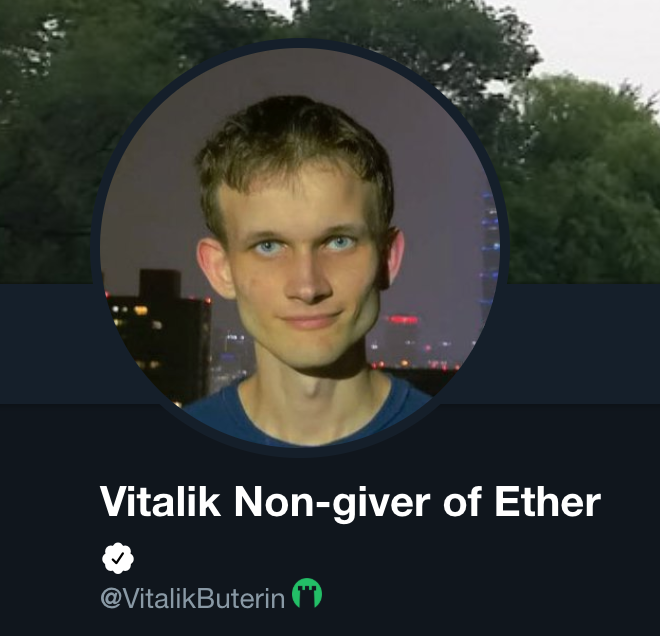
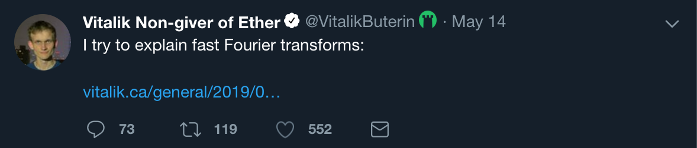

Step 3/3: Twitter
By default, you're also protected on Twitter when using Protect. Verified crypto users will have a green Aegis icon next to their profile.

Tweets posted by verified users will have the green icon to
make it easier to detect frauds.
